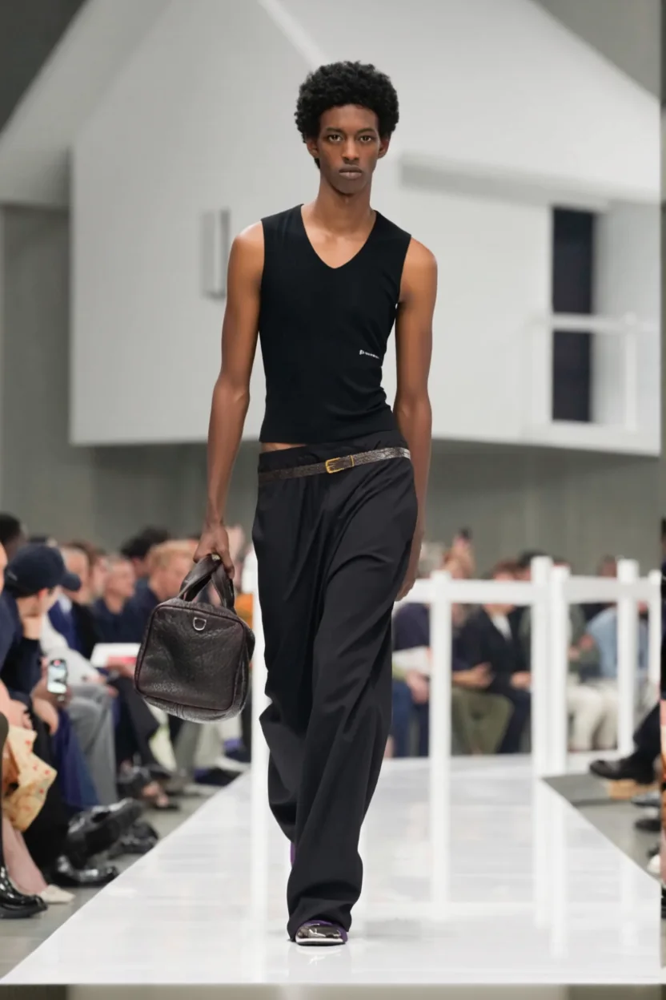
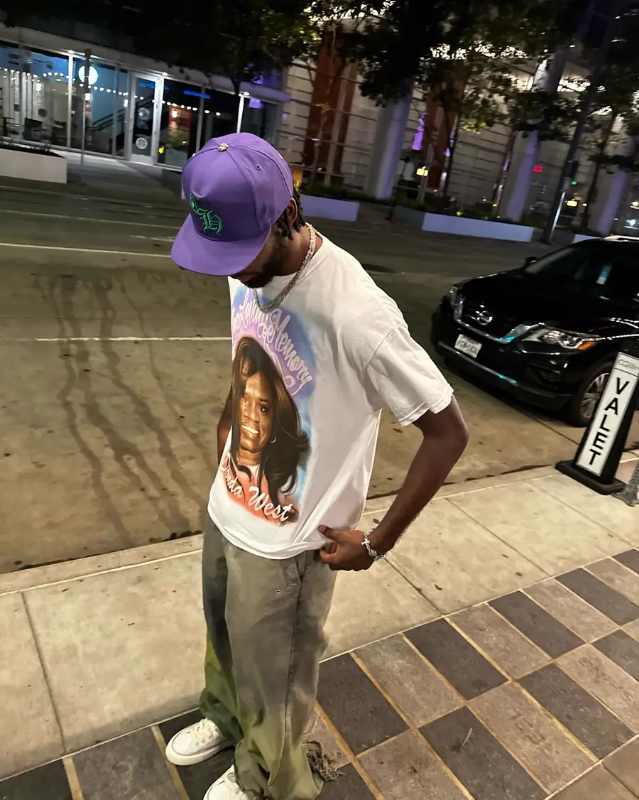
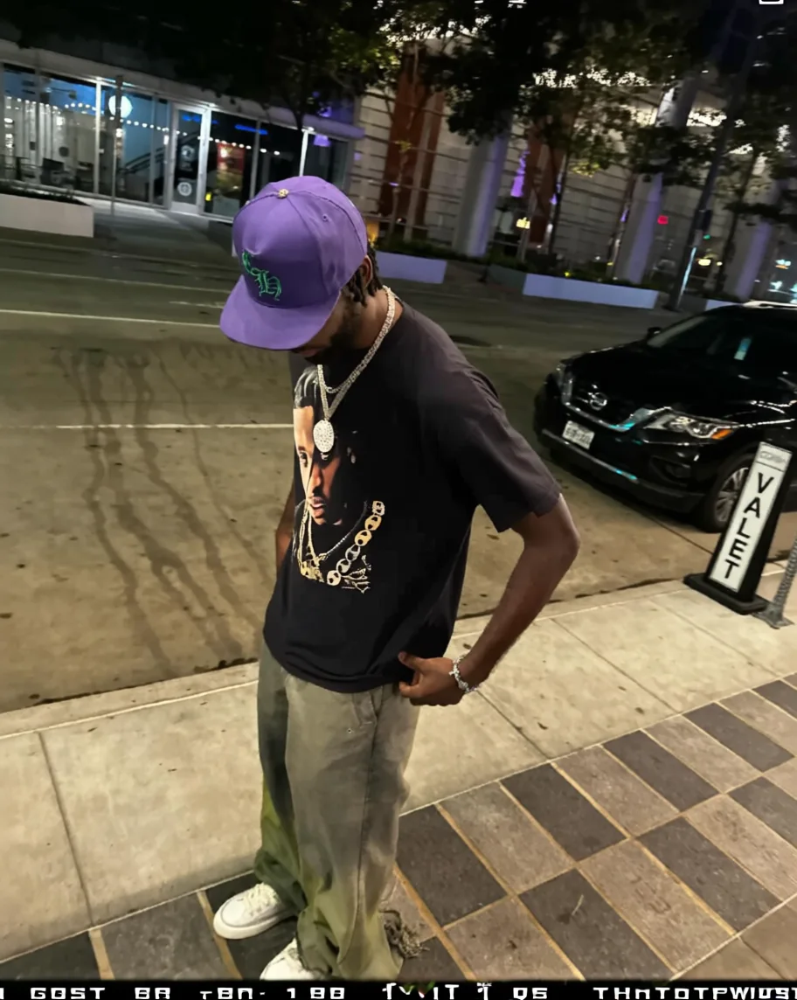
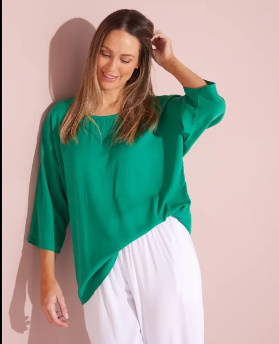
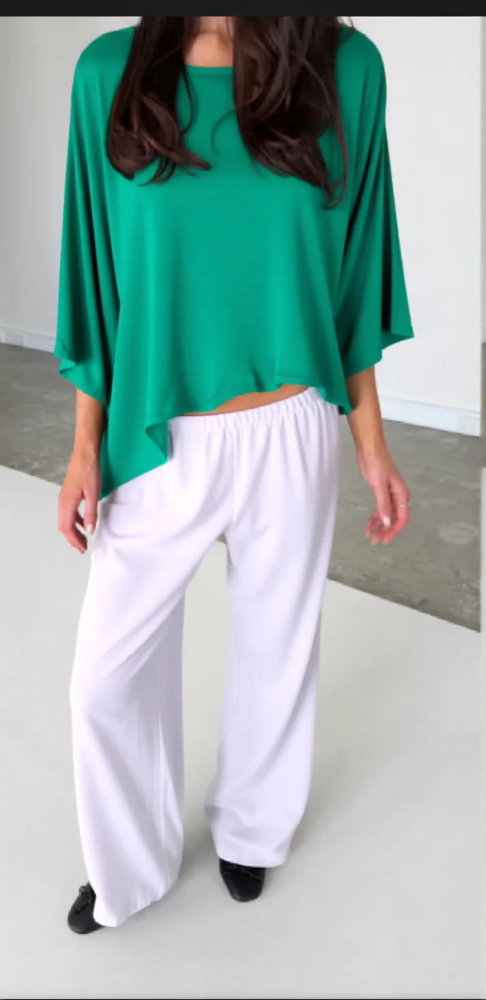
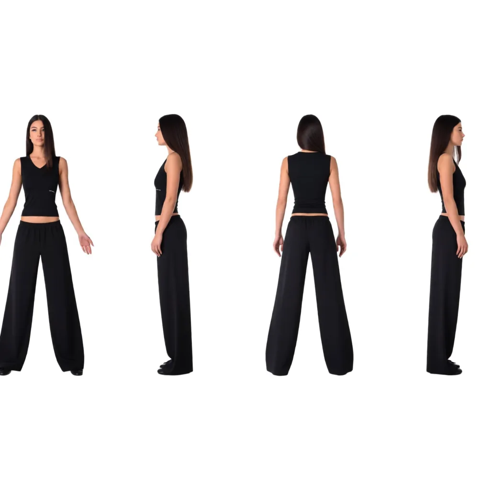

DRAPE: Browser-Based AI Virtual Try-On
Taking a finicky, research-grade AI image pipeline and making it actually run and serve. A pure static browser front-end drives a local ComfyUI server over its raw HTTP and WebSocket API to fit any garment onto a person, face, body and pose intact. The try-on is the demo; the engineering was getting the stack to load at all, then to preserve identity by construction rather than by luck.

Virtual try-on tools usually cheat: they regenerate the whole image, and the person who comes out the other side has a different face, a different body, and a different pose than the one who went in. DRAPE doesn't. It masks only the clothing region on the real photo and repaints the garment into it, so identity, proportions, and background are preserved by construction, not by luck.
The whole thing is a single static page: HTML, CSS, and vanilla JavaScript, no framework and no build step. The browser talks directly to a local ComfyUI server, building the AI workflow graph on the fly and orchestrating the entire run itself. Below: what it does, how the pipeline works, and what it took to get the AI stack running on Windows.
See it work
Same person, same pose, same street corner, only the shirt changes. The reference garment is a flat-lay photo; DRAPE fits it onto the model without touching the face, cap, jewelry, or background.


It works the same for a "worn" reference: here a green top photographed on one person is transferred onto another, keeping her hair, hands, and studio backdrop exactly as shot:


What it does
The workflow is deliberately simple, three steps:
- Upload a garment (required): a flat lay, mannequin, or worn photo. Tag it as Top, Bottom, or Full outfit.
- Upload a model (optional): a full-body photo of the person. Skip it and it falls back to a built-in default model.
- Generate: the AI masks the clothing region on the person and inpaints the reference garment into it. Results appear in a grid, downloadable individually or as a batch.
The details that make it feel finished: drag-and-drop and clipboard paste for uploads, a live server-status indicator, a real progress bar wired to the model's per-step callbacks, cancel/reset that also clears the backend queue, and cross-origin blob downloads so "Save" works even though the images come from a different server.
How it's put together
All the heavy lifting happens on the local ComfyUI server; the browser builds a ComfyUI workflow graph on the fly and submits it over HTTP and WebSocket:
| Node | Role |
|---|---|
LayerMask: HumanPartsUltra | DeepLabV3+ human-parsing model that produces a precise clothing mask on the person |
CatVTONWrapper | The try-on itself: inpaints the reference garment into the masked region |
SaveImage | Writes the final result |
The Top / Bottom / Full toggle simply flips which body-part masks the parsing
node turns on (its top_clothes / bottom_clothes booleans); the rest
of the graph is unchanged.
The API flow
The browser orchestrates the entire run itself:
- Upload: each image is POSTed to
/upload/imagewith a unique timestamped name. - Queue: the generated workflow is submitted to
/promptwith a per-sessionclient_id. - Live progress: a WebSocket to
/wsstreamsexecutingandprogressevents; the UI advances the bar and updates each step's status in real time. - Fetch results: once the graph finishes, it polls
/history/{promptId}and pulls output images from/view. - Cancel / reset: aborts in-flight fetches and calls
/interrupt+/queue {clear:true}so the server stops too.
Two approaches: Qwen-Image-Edit vs CatVTON
DRAPE's frontend is the same today as it was at the start, but the AI pipeline behind it was
rebuilt from scratch. The first version, archived in qwen-version/ in the repo,
used Qwen-Image-Edit and generated the whole image. The current one uses
CatVTON and only repaints the clothing. They solve the same problem in
fundamentally opposite ways.
V1: Qwen-Image-Edit, two-stage generative transfer
The Qwen version built a two-stage LoRA graph on a Qwen-Image-Edit UNet, driven by a 4-step Lightning LoRA plus two task LoRAs:
-
Stage 1: extract the outfit. The garment photo plus a fixed pose skeleton
(
frame.png) go through anextract-outfitLoRA and get regenerated as a clean product view: the full outfit rendered front, side, and back on a plain white background (image below). Saved asdrape_stage1. -
Stage 2: transfer onto the model. That extracted-outfit image plus the user's
model photo feed a
clothtransferLoRA, and a second sampler paints the outfit onto a freshly generated model at the model photo's resolution. Saved asdrape_final.
Both stages run inside one submitted graph; the frontend watches the WebSocket for the stage-2 nodes to start firing and flips its progress UI from "extracting" to "transferring" mid-run. It needs a heavier model set: the Qwen UNet, a Qwen 2.5-VL text encoder, a VAE, and three LoRAs, and a couple of fixed input assets baked into ComfyUI.

Qwen stage-1 output, the outfit "extracted" onto a fully generated model. Note it's a synthetic person, not the user's photo. That's the whole problem.
V2: CatVTON, masked inpainting
CatVTON never generates a new person. It runs a DeepLabV3+ human-parsing pass to build a precise mask of just the clothing region on the actual model photo, then inpaints the reference garment into that mask. Every pixel outside the mask (face, hands, hair, pose, background) is copied through untouched. Three nodes, one stage, built on SD1.5-inpainting.
Why the switch
The Qwen approach worked, but stage 2 generates the wearer from scratch: faces drifted, proportions shifted, backgrounds were invented. For a try-on tool that defeats the purpose: users want to see themselves in the garment, not a lookalike. CatVTON never redraws those pixels. The cost is a narrower job (it needs a real person photo and fits garments onto it, rather than also being able to visualize an outfit standalone) and a different, lighter model stack.
| V1: Qwen-Image-Edit | V2: CatVTON (current) | |
|---|---|---|
| Core idea | Generative, regenerates the whole image | Inpainting, repaints only the clothing region |
| Pipeline | Two-stage (extract outfit → transfer), one graph | Single-stage mask → inpaint |
| Nodes | ~15 (dual samplers, encoders, 3 LoRAs) | 3 (parse mask → CatVTON → save) |
| Models | Qwen UNet + Qwen 2.5-VL encoder + VAE + Lightning/extract/transfer LoRAs | DeepLabV3+ parser + CatVTON attention on SD1.5-inpaint |
| Identity / pose / background | Regenerated, drifts | Preserved by construction |
| Model photo required? | No, can synthesize a model | Yes, fits onto the real photo |
| Fixed input assets | Needs frame.png pose skeleton + default models in ComfyUI /input | None beyond the two uploads |
| Standalone outfit view | Yes (stage-1 product render) | No |
| Status | Archived in qwen-version/ | Live app |
Both versions share the exact same frontend: the redesigned layout, the WebSocket progress
wiring, the upload and download plumbing. Only buildWorkflow() changed: swap the
graph it emits and the whole app retargets a different AI backend.
Tech stack
| Layer | What |
|---|---|
| Frontend | Vanilla HTML / CSS / JavaScript, no framework, no bundler |
| Backend | Local ComfyUI server, driven entirely over its HTTP + WebSocket API |
| Models | DeepLabV3+ human parsing + CatVTON try-on, built on SD1.5-inpainting |
| Launcher | A Windows .bat that boots ComfyUI (CORS on), serves the UI on :5500, and opens the browser |
Challenges & what it took to fix
A "missing custom node" is almost always an import crash
CatVTONWrapper showed as missing with the pack plainly on disk; importing it by hand surfaced the real cause: cannot import name 'cached_download' from 'huggingface_hub', a stale diffusers importing a removed symbol, which quietly breaks every diffusers-based node. Read the true traceback before touching the node itself.
Swap the dependency, don't fight the compiler
The first CatVTON pack needed detectron2 and DensePose built from source, which on Windows reliably fails, so I switched to a pack where masking is a separate node. Its weights then had to be reassembled by script into the exact layout the node expects.